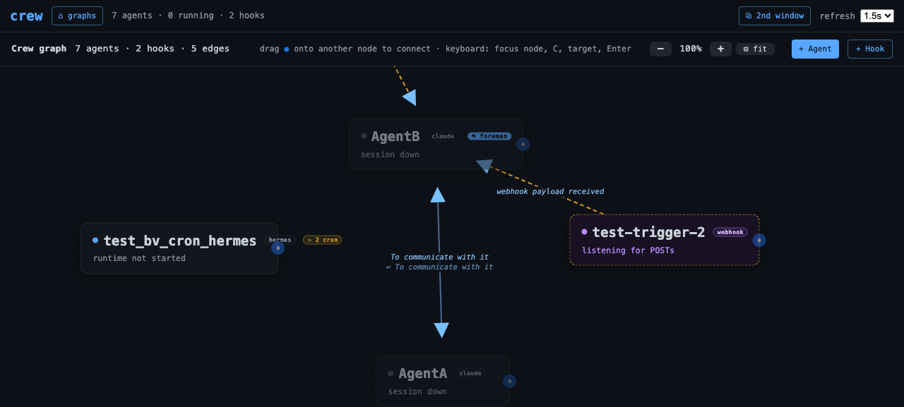
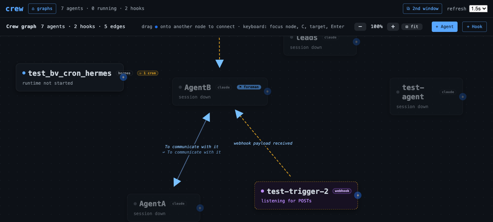

Each agent card and 'crew harness' show how many cron loops the agent's coding harness has scheduled under it, read from each harness's own durable state — Hermes cron jobs bound to the agent's workdir, Claude Code's per-home scheduled tasks, and an honest no-reading for Codex, which has no cron concept.
Feature IDcron-loop-badges
Created2026-07-28
Surfacescli, dashboard
Dependenciesnone
User flow
Start state
A harness can be
quietly running scheduled work — Hermes cron jobs firing in an
agent's workdir, Claude Code durable scheduled tasks — and the
crew graph shows nothing. The operator learns about a loop when
its output appears, not while it is scheduled.
Outcome
Each agent card badges
⟳ N cron when its harness has cron loops scheduled
under it, on the same poll that paints status, and
crew harness prints the same count. The reading comes
from each harness's OWN durable state: Hermes jobs whose workdir is
the agent's home (enabled ones only — Hermes's own predicate),
Claude Code's per-home scheduled-tasks store, and an honest
no-reading for Codex, which has no cron concept and therefore never
badges — a different claim from an honest zero, which also renders
nothing.
Architecture
One tiny method on the Harness base class, one honest
semantic: None means the reading is unavailable (no
store, corrupt state, or — for Codex — no cron concept at all),
which is a different claim from an honest 0; the UI renders nothing
for both. Readers use each harness's own predicates (Hermes's
enabled rule, the Claude binary's row-validity and recurring-age
rules), open state read-only, and a reading that breaks can never
take the goals reading with it. Claude Code's durable store is
feature-flagged off upstream today, so its honest reading is 0 —
and becomes live automatically if the flag flips, because the
reader targets the store path baked into the binary.
Public interface
Commands and APIs
crew harness [agent] gains a cron: N live
line (printed only for a real count above zero, like subagents);
every agent row in GET /api/graph/snapshot carries
cron_loops (int or null); the graph paints
⟳ N cron after the subagent badge. In Python, the
reading is Harness.read_cron_loops(home), default
None, wired through state() exactly like
the subagents reading.
Data and lifecycle
Crew persists
nothing for this feature and never writes harness state — readers
open each store read-only on the poll that needs it. Hermes:
cron/jobs.json under the profile state dir, jobs bound
to homes by their workdir (jobs without one belong to
no agent and never count). Claude Code:
<home>/.claude/scheduled_tasks.json — the home IS
the binding. Counts change as the harness's own stores change;
there is nothing to clean up.
Security and failure boundaries
Authority
Read-only introspection
behind surfaces that are already gated: the snapshot requires the
operator capability cookie, the CLI resolves its caller identity
the usual way. Harness state directories remain strictly read-only
to crew — the readers never create, repair, or migrate a store, and
job prompts/contents are never surfaced, only a count.
Failure behavior
A corrupt or
unreadable store degrades to None — rendered as
nothing, never a fabricated zero badge — and the degradation is
contained: a cron reading that raises is caught in
state() so it can never take the goals reading down
with it. Missing stores are distinguished honestly: no Hermes
profile at all is no reading, an existing profile with no jobs file
is an honest 0.
Rollout and reversal
Purely additive read path: one new optional
field on the wire (cron_loops), badges only when a real
count exists, no schema or store changes anywhere. Reverting the
commit removes the field and the badge; nothing durable
changes shape.
Ran 1262 tests in 99.1s at the candidate
revision. Two of the three failures and the one error are
pre-existing on main (two dashboard tests and the live-foreman
bless fixture); the third failure is the feature-docs check itself,
which clears once this dossier's revision and digest are stamped by
the evidence-only amend. Nothing else red, no regressions from this
feature.
Ran 102 tests in 0.12s; OK. 29 new tests pin
the cron readings: the base default-None and clamp/degrade contract,
Hermes counting only enabled jobs whose workdir realpath-matches the
home (a null workdir is never attributed; no profile is None, a
profile with no jobs file is an honest 0, corrupt JSON is None),
Claude Code's row-validity rules and 7-day recurring window with the
permanent escape hatch (an absent store is an honest 0), and Codex
staying None.
Ran 14 tests in 0.14s against the real
Claude Code, Codex CLI, and Hermes installs on this machine,
read-only; OK.
cd frontend; npx vitest run
5 files, 23 tests; OK. The new graph_layout
contract pins the badge markup: present with plural/singular tooltip
for a real count above zero, absent for 0, a missing reading, and
webhook nodes, and coexisting with the subagent badge.
Against the throwaway fixture profile holding
one enabled job bound to the agent's home, one disabled job, and one
job with a null workdir: cron: 1 live. With two enabled bound jobs
the same command read 2; the disabled and unbound jobs never
counted.
Every agent row carries cron_loops. With no
fixture in play all six claude-runtime agents read an honest 0 — the
upstream durable scheduler ships flag-off, so an absent per-home
store genuinely means nothing scheduled — and no card badges.
tests/browser/cron-loop-badges.md (executed with agent-browser)
Badge showed ⟳ 2 cron on the hermes fixture
card with the plural tooltip, decayed to ⟳ 1 cron with a singular
tooltip within one poll of disabling a job, and disappeared when the
jobs array emptied; claude cards and webhook nodes showed no badge
throughout. Fixture agent, state dir, and dashboard env override
were all removed afterwards.
python3 scripts/validate_feature_docs.py
feature HTML valid: 6 record(s), template present

The live dashboard at the tested revision: the hermes
fixture card badges ⟳ 2 cron from two enabled jobs
bound to its home; the disabled job and the workdir-less job are
not counted, and the claude cards around it show no
badge.

The same card one poll after disabling one job: the
badge reads ⟳ 1 cron with a singular tooltip. It
disappeared entirely when the jobs array was
emptied.
Engineering inventory and redaction notes
Readers live in crew/harness/ (one
read_cron_loops override each for Claude Code and
Hermes, a deliberate non-override for Codex, and the shared
count_reading degrade helper in the base); the CLI
line in crew/cli.py; the snapshot attach in
crew/server/app.py; the badge in
frontend/src/graphEngine.js +
app.css. All cron fixtures in unit tests are
synthetic temp dirs; the live browser run used a throwaway Hermes
profile and a prefixed test_bv_ agent, both removed
in cleanup, and real harness state was only ever opened
read-only. Screenshots were captured after scrubbing the
capability fragment from the URL; no secrets, prompts, or job
contents appear in any artifact — the feature surfaces only a
count.